EO
Empire Granite · Stone Slab Inventory
ขายงานโครงการ
ด้วย BOQ
จาก BOQ Excel ของลูกค้า → ใบเสนอราคาอัตโนมัติ → ผูกสินค้าจริง → ติดตามกำไรจริงรายโครงการ
EMG-O Manual · BOQ Estimation + Sold-as-Project
ภาพรวม · BOQ Estimation + Sold-as-Project
ขายงานโครงการใหญ่ด้วย BOQ — จาก Excel ถึงกำไรจริงรายโครงการ
?
โจทย์
ลูกค้าทำ BOQ งานประมูลใหญ่ใน Excel — แต่ละ Zone มีรายการหิน+rate ของตัวเอง ปัญหาเดิม: rate ของแต่ละรายการถูกพิมพ์ซ้ำทุกไฟล์ที่ใช้หินตัวนั้น พอต้นทุนเปลี่ยนต้องไล่แก้เองทุกไฟล์ ไม่มี single source of truth
Rate Library
รายการ+ราคา ใช้ซ้ำได้ไม่จำกัด
→
BOQ Document
จัดกลุ่มเป็น Zone ตามหน้างาน
→
Sale Order
สร้างอัตโนมัติ สรุปยอดต่อ Zone
→
Project
ติ๊ก Sold as Project → ดูกำไรจริง
หลักคิด: โมดูล BOQ Estimation แก้ปัญหา rate ซ้ำซ้อนด้วย single source of truth ส่วน Sold-as-Project ทำให้เห็นกำไรจริงของงานทั้งก้อน ไม่ใช่แค่ต่อบรรทัดสินค้า — สองส่วนนี้ทำงานต่อกันได้ แต่แยกใช้อิสระได้เช่นกัน

หน้าจอ Rate Library — จุดเริ่มต้นของทุกอย่าง
ขั้นตอนที่ 1 · สร้าง Rate Library
ตั้งราคาต้นทุน+ขายไว้ครั้งเดียว ใช้ซ้ำได้ทุกโปรเจกต์
เปิด Rate Library → New→
กรอก Item/Unit/Cost→
Total Rate คำนวณอัตโนมัติ→
บันทึก ใช้ซ้ำได้เลย
1
สถานการณ์จริง
ทีม estimate มีรายการหิน "ST1 Black Emperador polished" ที่ใช้ซ้ำในหลายโปรเจกต์ ราคาต้นทุน 7,080 บาท/ตร.ม. — เดิมพิมพ์ราคานี้ซ้ำในทุกไฟล์ Excel ที่ใช้หินตัวนี้ พอต้นทุนเปลี่ยนต้องไล่เปิดแก้เองทุกไฟล์ เสี่ยงพิมพ์ตกหรือลืมแก้บางไฟล์
ข้อมูลที่กรอก → Key ที่ไหนใน Odoo
| ข้อมูล | ตัวอย่างค่าจริง | ตำแหน่งใน Odoo |
|---|
| Item Code | ST1 | BOQ Estimation → Rate Library → New |
| Description | Black Emperador polished | ฟอร์มเดียวกัน — ช่อง Description |
| Unit | ตร.ม. | ฟอร์มเดียวกัน — ช่อง Unit |
| Material Cost | 7,080 บาท | ฟอร์มเดียวกัน — ช่อง Material Cost |
| Total Rate | คำนวณให้อัตโนมัติ | ฟอร์มเดียวกัน — ช่อง Total Rate (readonly) |
ขั้นตอนที่ 1 · สร้าง Rate Library
รายละเอียดขั้นตอน
- 1เปิด BOQ Estimation → Rate Library → กด New
- 2กรอก Item Code, Description, Unit, Material Cost, Labour Cost — ราคา/หน่วยรวม (Total Rate) คำนวณให้อัตโนมัติ
- 3เพิ่ม Rate ตัวที่สอง (เช่น ST2 White Sivec honed) แบบเดียวกัน แล้ว Save
- 4ตอนนี้มี Rate พร้อมใช้ซ้ำได้ไม่จำกัดจำนวนครั้งในทุก BOQ Document ต่อไป
จำง่ายๆ: แก้ราคาที่ Rate Library ที่เดียว ทุก BOQ Document ใหม่ที่ผูก Rate นี้จะได้ราคาที่อัปเดตทันที ไม่ต้องไล่แก้ทีละไฟล์เหมือน Excel

กรอก Rate ST1 — Total Rate คำนวณอัตโนมัติ

มี Rate พร้อมใช้ซ้ำได้ 2 ตัวแล้ว
ขั้นตอนที่ 2 · สร้าง BOQ Document
ใส่รายการทีละ Zone เหมือนที่ทำใน Excel
BOQ Documents → New→
กรอก Customer + %→
BOQ Lines: Zone+Rate+Qty→
Save
2
สถานการณ์จริง
ไฟล์ BOQ-ZoneXX มีหลาย Zone (L2 Main Lobby, L4 Main Lobby ฯลฯ) แต่ละ Zone มีรายการหิน+จำนวนของตัวเอง เดิมต้องรวมยอดแยกตาม Zone เองใน sheet "รวมเป็นเงิน" — พิมพ์สูตรผิดหรือลืมอัปเดตแถวใหม่ก็เกิดขึ้นได้ง่าย
ข้อมูลที่กรอก → Key ที่ไหนใน Odoo
| ข้อมูล | ตัวอย่างค่าจริง | ตำแหน่งใน Odoo |
|---|
| Customer / Company | ตามลูกค้าจริง | BOQ Estimation → BOQ Documents → New — หัวฟอร์ม |
| Preliminaries % | 2% | หัวฟอร์มเดียวกัน |
| Overhead & Profit % | 10% | หัวฟอร์มเดียวกัน |
| Zone (Schedule) | L2 Main Lobby / L4 Main Lobby | แท็บ BOQ Lines → คอลัมน์ Schedule/Zone |
| Rate Library Item | ST1 / ST2 | แท็บ BOQ Lines → คอลัมน์ Rate |
| Quantity | ตร.ม. ตามหน้างานจริง | แท็บ BOQ Lines → คอลัมน์ Quantity |
ขั้นตอนที่ 2 · สร้าง BOQ Document
รายละเอียดขั้นตอน
- 1ไปที่ BOQ Documents → New → กรอก Customer, Company และ % ตามเงื่อนไขโปรเจกต์
- 2แท็บ BOQ Lines → Add a line → ใส่ชื่อ Zone → เลือก Rate Library Item → ใส่ Quantity
- 3ราคา/หน่วยและยอดรวมกรอกอัตโนมัติจาก Rate ที่เลือก ไม่ต้องคำนวณเอง
- 4ทำซ้ำจนครบทุก Zone แล้ว Save — เช็คยอดสรุปด้านล่างฟอร์ม
Schedule/Zone คือ key รวมยอด: พิมพ์ชื่อ Zone ซ้ำได้หลายบรรทัด — ตอนสร้างใบเสนอราคาระบบจะรวมเป็น 1 บรรทัดสรุปให้อัตโนมัติ
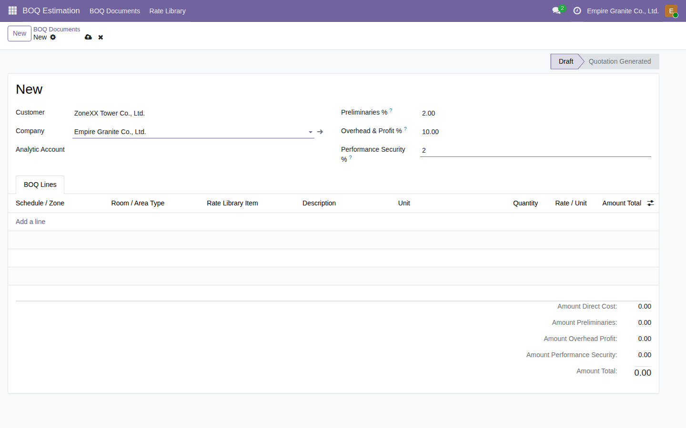
กรอก Customer + % เงื่อนไขโปรเจกต์
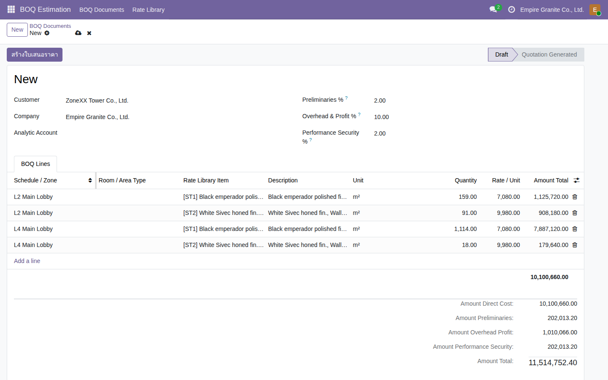
เพิ่ม BOQ Lines ผูก Zone + Rate + Quantity
ขั้นตอนที่ 3 · สร้างใบเสนอราคาอัตโนมัติ
กดปุ่มเดียว ได้ใบเสนอราคาตรงกับ Excel เป๊ะ
กด "สร้างใบเสนอราคา"→
Sale Order ใหม่ทันที→
Section header ตาม Zone→
ผูกกลับ BOQ Document ต้นทาง
3
สถานการณ์จริง
BOQ0002 จำลอง 2 Zone จากไฟล์จริง (L2+L4 Main Lobby) — ทดสอบว่าโมดูลคำนวณตรงกับไฟล์ Excel ต้นฉบับหรือไม่ ก่อนเอาไปใช้กับงานจริง ผลคือยอด L2/L4 ตรงกับไฟล์ต้นฉบับทุกบาท
ข้อมูลบน BOQ Document → ไป Key ที่ไหนบนใบเสนอราคา
| ข้อมูลต้นทาง | ปรากฏยังไง | ตำแหน่งบนใบเสนอราคา |
|---|
| Zone (Schedule) | รวมยอดต่อ Zone ให้เอง | Order Lines → Section header |
| Rate × Quantity | รวมเป็น 1 บรรทัดสรุปต่อ Zone | Order Lines → บรรทัด "BOQ Summary Line" |
| BOQ Document ต้นทาง | ผูกกลับอัตโนมัติ (ซ่อนอยู่หลังบ้าน) | field boq_line_id บนแต่ละบรรทัด |
ขั้นตอนที่ 3 · สร้างใบเสนอราคาอัตโนมัติ
ผลจริงจากคลิปนี้ (BOQ0002 → S54372)
| L2 Main Lobby | 2,033,900.00 |
| L4 Main Lobby | 8,066,760.00 |
| Amount Direct Cost | 10,100,660.00 |
| Preliminaries 2% | 202,013.20 |
| Overhead & Profit 10% | 1,010,066.00 |
| Amount Total (ก่อน VAT) | 11,514,752.40 |
ยืนยันแล้ว: ยอด L2 และ L4 ในตารางนี้ตรงกับตัวเลขจริงในไฟล์ BOQ-ZoneXX ต้นฉบับเป๊ะ — logic การคำนวณตรงกับวิธีที่ฝ่าย estimate ใช้อยู่ในปัจจุบัน
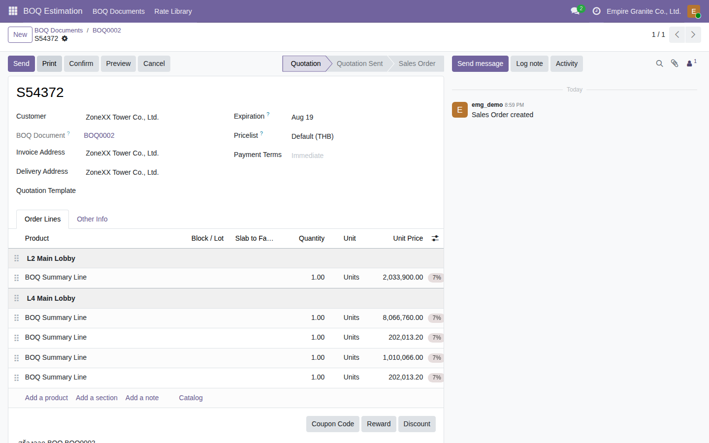
ใบเสนอราคาที่สร้างอัตโนมัติ — แบ่ง section ตาม Zone
ขั้นตอนที่ 4 · ผูกบรรทัดหินกับสินค้าจริง
ฝ่ายปฏิบัติงานกดทำงานต่อได้เลย ไม่ต้องย้อนกลับไปหา Excel
Rate Library → ผูก Product→
สร้าง BOQ Document ปกติ→
กดสร้างใบเสนอราคา→
บรรทัดกลายเป็นสินค้าจริง
4
สถานการณ์จริง
เดิมทุกบรรทัดในใบเสนอราคาเป็น placeholder "BOQ Summary Line" — พอลูกค้า confirm แล้ว ฝ่ายปฏิบัติงานไม่มีปุ่มอะไรให้กดต่อ ต้องย้อนกลับไปเปิด BOQ Document หรือ Excel ต้นทางเองทุกครั้ง เสียเวลาและเสี่ยงหยิบผิดรุ่น
ข้อมูลที่กรอก → Key ที่ไหนใน Odoo
| ข้อมูล | ตัวอย่างค่าจริง | ตำแหน่งใน Odoo |
|---|
| Product | Finish variant ของ Material นั้น | Rate Library → แถว Rate item → ช่อง Product |
ผลที่ตามมาอัตโนมัติ: BOQ Document ใหม่ที่ใช้ Rate นี้ → กด "สร้างใบเสนอราคา" → บรรทัดกลายเป็นสินค้าจริงทันที ไม่ต้องผูกซ้ำทีละใบ
ขั้นตอนที่ 4 · ผูกบรรทัดหินกับสินค้าจริง
รายละเอียดขั้นตอน
- 1เปิด Rate Library → คลิกช่อง "Product" ของ Rate item ที่ต้องการ → เลือกสินค้าจริง (สำหรับหิน เลือก Finish variant ของ Material นั้น) → Save
- 2สร้าง BOQ Document ตามปกติ (ใช้ Rate ที่ผูก Product ไว้แล้ว) → กด "สร้างใบเสนอราคา"
- 3บรรทัดที่ผูก Product กลายเป็นสินค้าจริงทันที พร้อมปุ่ม Select Slabs / Cut to Order / Recompute Price (BOQ) เหมือนงานขายหินปกติทุกประการ
- 4บรรทัดที่ไม่ได้ผูก Product ยัง fallback เป็น placeholder เหมือนเดิม ไม่พังอะไร
ทำไม Quantity เป็น 1 เสมอตอนสร้างใหม่: หินขายเป็น "แผ่น" ไม่ใช่ ตร.ม. — ตัวเลข ตร.ม.จริงยังโชว์อยู่ในคำอธิบายบรรทัด รอ Select Slabs/Cut to Order เปลี่ยนจำนวนเป็นแผ่นจริงให้เองทีหลัง

ผูก Rate item กับสินค้าจริงใน Rate Library

บรรทัดหินกลายเป็นสินค้าจริง มีปุ่ม Select Slabs
ขั้นตอนที่ 5 · อย่าลืมกด Recompute Price
เลือกแผ่นจริงแล้ว ราคาเพี้ยน ต้องกดปุ่มนี้ทุกครั้ง
Select Slabs → Confirm→
ราคาเพี้ยนตามมาตรฐาน Odoo→
กด "Recompute Price (BOQ)"→
ราคากลับมาถูกต้อง
5
สถานการณ์จริง
ฝ่ายปฏิบัติงานกด Select Slabs เลือกแผ่นจริงแล้ว Confirm — ราคาต่อหน่วยถูก Odoo เขียนทับด้วยราคามาตรฐานของสินค้าทันที ยอดรวมตกฮวบจาก 309,470.75 ฿ เหลือ 49,995.75 ฿
ต้องกดปุ่มไหน → อยู่ตรงไหนใน Odoo
| ต้องทำ | ผลที่เกิด | ตำแหน่งใน Odoo |
|---|
| Select Slabs / Cut to Order | จำนวนอัปเดตเป็นแผ่นที่ hold จริง แต่ราคาเพี้ยนชั่วคราว | Sale Order Line → ปุ่ม "Select Slabs" |
| Recompute Price (BOQ) | คำนวณใหม่จาก Rate เดิม × ตร.ม.จริง ราคากลับมาถูก | Sale Order Line → ปุ่ม "Recompute Price (BOQ)" |
ขั้นตอนที่ 5 · อย่าลืมกด Recompute Price
รายละเอียดขั้นตอน
- 1กด Select Slabs เลือกแผ่นจริงแล้ว Confirm — จำนวนอัปเดตเป็นแผ่นที่ hold จริง
- 2ราคาต่อหน่วยเปลี่ยนเป็นราคามาตรฐานสินค้าทันที — พฤติกรรมมาตรฐานของ Odoo ไม่ใช่บั๊ก
- 3กด "Recompute Price (BOQ)" — คำนวณใหม่จาก Rate เดิม × ตร.ม. ของแผ่นที่ hold จริง กลับมาถูกต้องทันที
- 4ถ้ากด Cut to Order แทน ระบบเช็คแผ่นเศษให้อัตโนมัติ เตือนแบบ popup ไม่บล็อกการทำงาน
สำคัญ: ต้องกด Recompute ทุกครั้งหลัง Select Slabs/Cut to Order ไม่ใช่แค่ครั้งแรก — ลืมกดแล้วใบเสนอราคาจะใช้ราคาสินค้ามาตรฐาน ไม่ใช่ราคาที่ตกลงกับลูกค้า
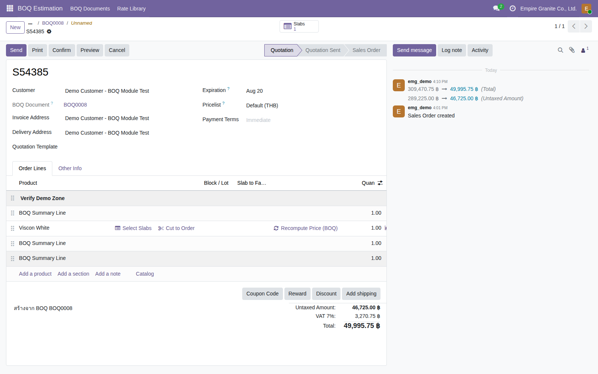
เลือกแผ่นจริงแล้ว — ราคาเพี้ยนไปตามราคามาตรฐาน Odoo ชั่วคราว
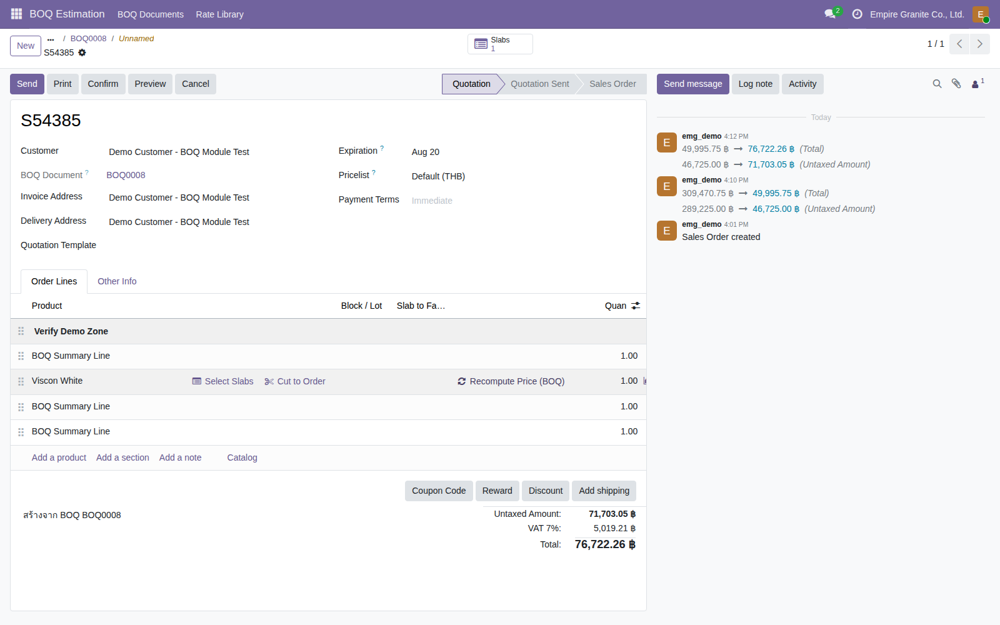
กด Recompute Price (BOQ) — ราคากลับมาถูกต้อง
เอกสารส่งลูกค้า
พิมพ์ PDF หรือ Export Excel ได้จาก BOQ Document เดียวกัน
6
สถานการณ์จริง
ต้องส่งเอกสารสรุป BOQ ให้ลูกค้าหรือทีมงานเปรียบเทียบราคา ไม่อยากพิมพ์สกรีนหรือทำตารางเองใหม่ทุกครั้ง
ต้องกดปุ่มไหน → อยู่ตรงไหนใน Odoo
| ต้องทำ | ได้อะไร | ตำแหน่งใน Odoo |
|---|
| พิมพ์ PDF | เอกสารจัดกลุ่มตาม Zone พร้อม Sub-Total | BOQ Document → ปุ่ม "Print" |
| Export Excel | ไฟล์ .xlsx จัดรูปแบบสวย พร้อมส่งลูกค้า | BOQ Document → ปุ่ม "Export Excel" |
- 1จาก BOQ Document เดียวกัน กดปุ่ม "พิมพ์ PDF" หรือ "Export Excel" ได้ทันที
- 2ทั้งสองแบบจัดกลุ่มตาม Schedule/Zone พร้อม Sub-Total ต่อ Zone
- 3สรุป Direct Cost/Preliminaries/Overhead & Profit/Performance Security/Total ท้ายเอกสารเหมือนกันทั้งสองแบบ
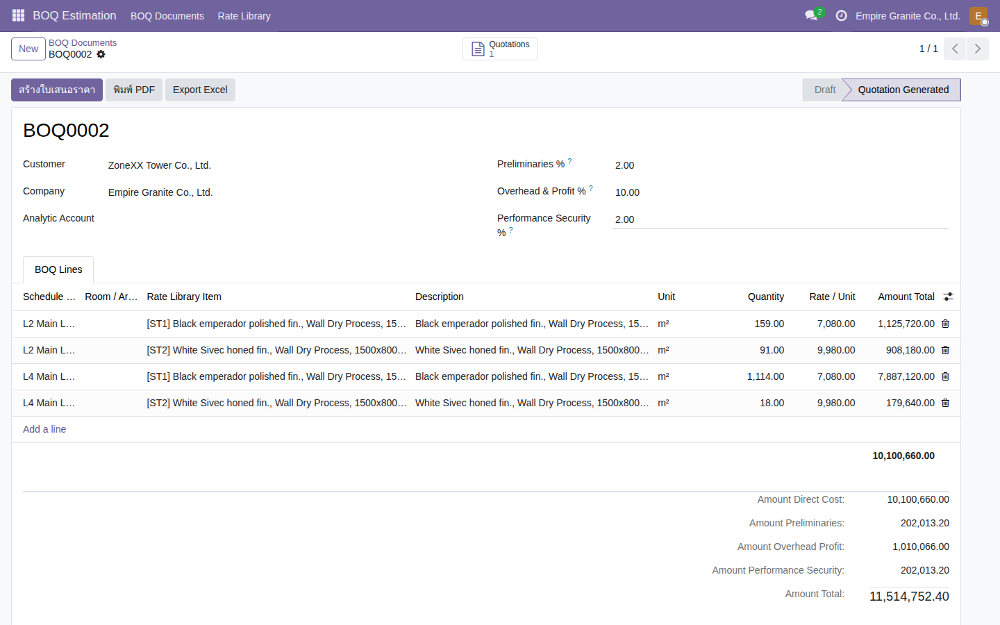
ปุ่มพิมพ์ PDF / Export Excel บน BOQ Document
ขั้นตอนที่ 6 · เปิดโหมด "ขายแบบโครงการ"
งานเดียวมีทั้งวัสดุ+ค่าแรง ต้องดูเป็นโครงการเดียวกัน
เปิด SO→
เพิ่มบรรทัดวัสดุ+ค่าแรง→
Other Info → ติ๊ก "Sold as Project"→
Confirm
7
สถานการณ์จริง
งานติดตั้ง Top หินหลายห้อง มีทั้งบรรทัดวัสดุ (หิน) และบรรทัดค่าแรงติดตั้งหน้างาน — อยากรู้กำไรที่แท้จริงของงานนี้รวมกันทั้งก้อน ไม่ใช่แยกดูทีละบรรทัดเหมือนใบขายทั่วไป
ข้อมูลที่กรอก → Key ที่ไหนใน Odoo
| ข้อมูล | ตัวอย่างค่าจริง | ตำแหน่งใน Odoo |
|---|
| สินค้าบริการค่าแรง | "ค่าแรงติดตั้งหน้างาน" (Product Type = Service) | Sales → Products → New |
| บรรทัดวัสดุ+ค่าแรง | 2 บรรทัดในใบขายเดียวกัน | Quotation → Order Lines |
| Sold as Project | ติ๊ก ✓ | Quotation → แท็บ Other Info → checkbox "Sold as Project" |
ขั้นตอนที่ 6 · เปิดโหมด "ขายแบบโครงการ"
รายละเอียดขั้นตอน
- 1สร้างสินค้าประเภทค่าแรง/บริการ (Product Type = Service) เช่น "ค่าแรงติดตั้งหน้างาน" — ไม่ผ่านฟอร์ม Material เพราะไม่ใช่หินที่ต้องคุมสต็อก
- 2Sales → New Quotation → เพิ่ม 2 บรรทัด: วัสดุ (หิน) + สินค้าบริการค่าแรง ในใบขายเดียวกัน
- 3แท็บ Other Info → ติ๊ก "Sold as Project" (field is_project_sale)
- 4กด Confirm — SO กลายเป็น Sales Order จริง พร้อม smart button ใหม่ "Projects" และ "Tasks"
เป็น opt-in เสมอ: ไม่ได้เกิดอัตโนมัติทุก SO ต้องเลือกเองว่า SO นี้เป็นงานโครงการ

สร้างสินค้าบริการค่าแรง (Product Type = Service)
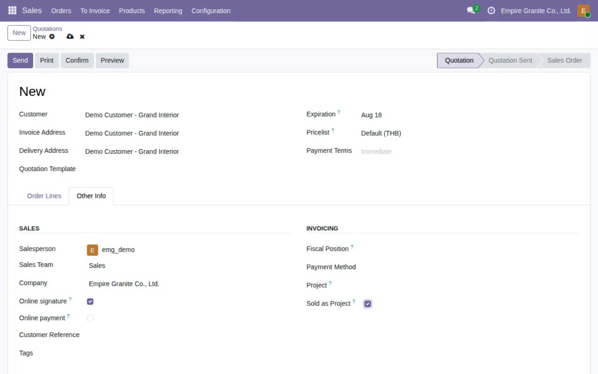
แท็บ Other Info → ติ๊ก "Sold as Project"
ผลลัพธ์ · BOQ ครบกระบวนการ → Gantt ตรงกับทุกรายละเอียด
BOQ ยิ่งละเอียด Gantt ก็ยิ่งครบ — 1 บรรทัด BOQ = 1 แท่งงานบน Gantt เสมอ
9
ตัวอย่างจริง — Demo Customer, The Riverside Residence
BOQ แตก 8 ขั้นตอนครบกระบวนการ — Confirm ครั้งเดียว ระบบสร้าง Task+Gantt ให้ครบทุกบรรทัดอัตโนมัติ
| 1. สำรวจหน้างานและวัดขนาด | 8,000 |
| 2. จัดหา/สั่งซื้อ Block หินแกรนิต | 180,000 |
| 3. ตัดแผ่นหินตามขนาด (Cut-to-Order) | 45,000 |
| 4. ขัดผิวและเจียรขอบ | 25,000 |
| 5. บรรจุและจัดส่ง | 12,000 |
| 6. ติดตั้งหน้างาน | 60,000 |
| 7. ยาแนวและเคลือบผิวกันซึม | 15,000 |
| 8. ตรวจรับงานและส่งมอบ | 5,000 |
| Amount Total (รวม Overhead 10%) | 385,000 |
ตรงกันเสมอ: 1 บรรทัด BOQ = 1 Task บน Gantt เสมอ ไม่ต้องพิมพ์ตารางงานแยกอีกชุด
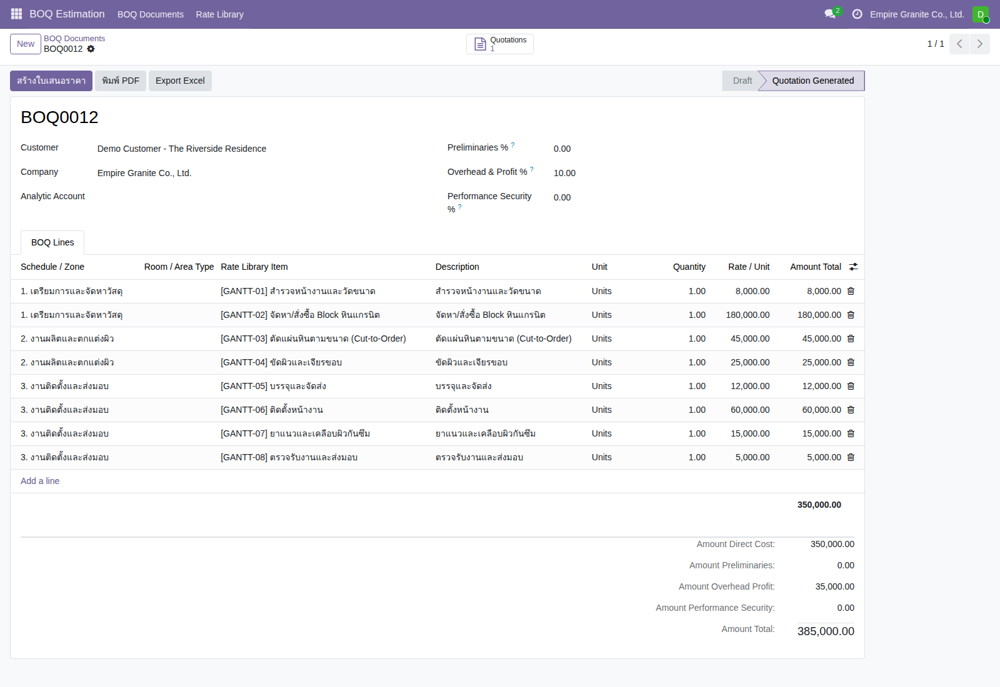
BOQ Document จริง — 8 รายการ จัดกลุ่มเป็น 3 ช่วงงาน
Gantt Chart · มองเห็นภาพรวมทั้งโครงการในหน้าจอเดียว
แท่งงานเรียงตามลำดับจริง เห็นวันนี้อยู่ตรงไหนของงาน
10
อ่านยังไง
แต่ละแท่ง = 1 ขั้นตอนจาก BOQ พร้อมวันเริ่ม-วันจบจริง เส้นประสีแดง = วันนี้ ลูกค้าเห็นได้ทันทีว่างานถึงขั้นตอนไหนแล้ว ไม่ต้องถามทีมงาน
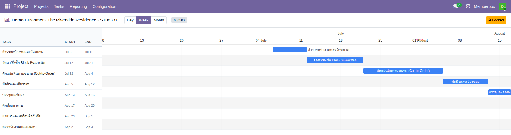
Gantt Chart จริง — 8 แท่งงานเรียงตามลำดับ BOQ ทุกขั้นตอน
วางบิลเป็นงวด · Milestone ตาม % ความสำเร็จของงาน
3 งวดงาน 30/40/30% ผูกกับจังหวะงานจริง ไม่ใช่วันที่สุ่มเดา
11
ตัวอย่างจริง — เดียวกับ Riverside Residence
ทุกโปรเจกต์ที่ติ๊ก Sold as Project จะได้ 3 งวดงานนี้อัตโนมัติเสมอ — ทีมงานกำหนด deadline ของแต่ละงวดให้ตรงกับจังหวะงานจริงจาก Gantt ได้เอง ไม่ใช่ค่าคงที่ตายตัว
| 🚩 เงินมัดจำ (30%) | เริ่มงาน — รับแล้ว ✓ |
| 🚩 งวดกลาง (40%) | ก่อนเริ่มขั้นตอนติดตั้ง |
| 🚩 งวดส่งมอบ (30%) | วันส่งมอบงาน |
แยกจากใบแจ้งหนี้โดยเจตนา: Milestone ใช้ติดตาม "ความคืบหน้า" งานเท่านั้น ส่วนการวางบิลจริงใช้ Down Payment Wizard สัดส่วนเดียวกัน (30/40/30%) แยกกลไกกัน — ปรับงวดบิลได้อิสระโดยไม่กระทบสถานะความคืบหน้าที่ทีมงานกำลังติดตามอยู่
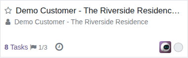
แสดงบนการ์ดโปรเจกต์ทันที — 🚩 1/3 = รับมัดจำแล้ว 1 จาก 3 งวด
ผลลัพธ์สุดท้าย · ดูกำไรจริงรายโครงการที่ Analytic Account
เห็นกำไรจริงรายโครงการ ไม่ใช่แค่ประมาณการ
Confirm SO→
Project+Task+Gantt อัตโนมัติ→
วางบิลเป็นงวด 30/40/30%→
ส่งของแต่ละรายการ→
ดูกำไรที่ Analytic Items
12
ตัวอย่างจริง — โครงการคอนโดบางโพ (Empire Stone)
Bundle ผูก Analytic Account → PO ซื้อวัสดุ ฿2,800 (auto-tag ติดโครงการ) → ส่งของจริง 8 แผ่น → Invoice ฿17,120 → กำไรสุทธิที่เห็นจริงใน Analytic Items = +฿13,200
- 1ระบบสร้าง Project + Task ให้ทุกบรรทัด BOQ อัตโนมัติ พร้อม Gantt — ต้องตั้งวันที่ Task ก่อนถึงเห็นแท่งงาน
- 2วางบิลเป็นงวดด้วย Down Payment Wizard สัดส่วน 30/40/30% — ออกใบแจ้งหนี้ตามงวด ไม่รอส่งของก่อน
- 3Milestone 30/40/30 ใช้ติดตามความคืบหน้างานเท่านั้น ไม่ผูกกับการวางบิล — คนละกลไกกันโดยเจตนา
- 4ต้นทุนวัสดุ+ค่าแรงเทียบกับรายได้ ที่ Analytic Account เดียวกัน — เห็นกำไรจริงต่อโครงการ ไม่ใช่แค่ต่อ SO
ข้อจำกัดที่ทราบ: ถ้าแผ่นในบรรทัดเดียวมาจาก Bundle คนละ Analytic Account ระบบไม่เดาเอง ต้อง tag เองภายหลัง
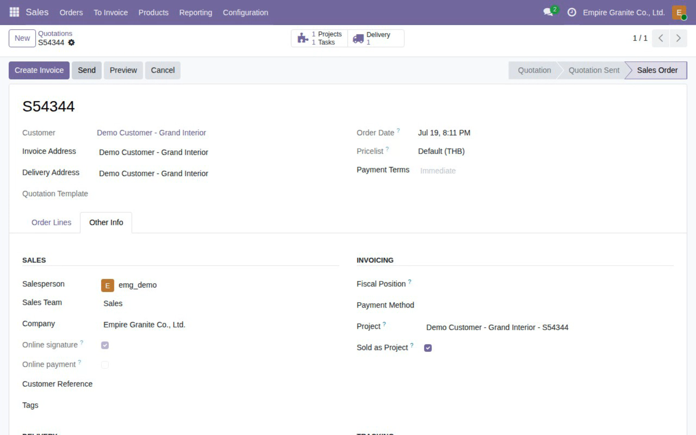
SO ยืนยันแล้ว — smart button Projects/Tasks + Sold as Project
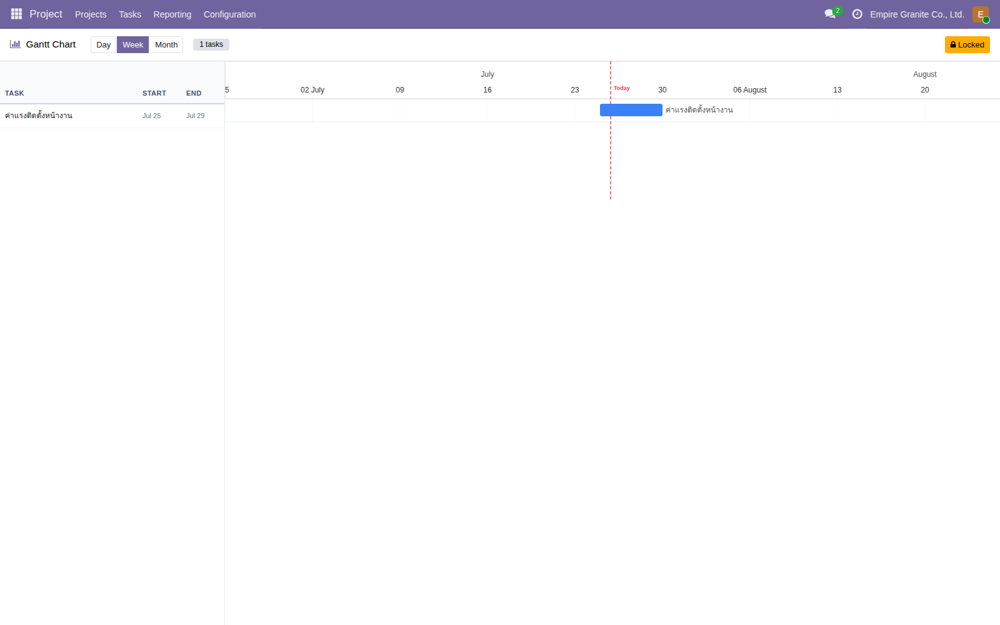
Gantt Chart จริง — แท่งงานขึ้นตามวันที่ตั้งไว้
สรุปภาพรวม
จาก Excel BOQ ถึงกำไรจริงรายโครงการ — Flow เดียวจบ
Rate Library→
BOQ Document (Zone)→
สร้างใบเสนอราคา→
ผูกสินค้าจริง+Recompute→
ติ๊ก Sold as Project→
ดูกำไรที่ Analytic Items
แบบที่ 1 — เฉพาะ BOQ Estimation
Rate Library → BOQ Document → สร้างใบเสนอราคาอัตโนมัติ → พิมพ์ PDF/Export ส่งลูกค้า (ยังไม่ผูก Project)
แบบที่ 2 — BOQ + Sold as Project
เหมือนแบบที่ 1 + ผูกสินค้าจริง + ติ๊ก Sold as Project → ได้ Project/Gantt/วางบิลเป็นงวด/ดูกำไรจริงรายโครงการ
มีคำถามเพิ่มเติมระหว่างใช้งานจริง ติดต่อทีมงานได้ตลอดเวลา